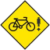

|  |
Ride Dammit! Ride Log |
IntroductionRide Dammit! is a web-based bicycle ride log which is designed to be simple and easy to use. It provides basic functionality for a small group of riders including tracking of maximum/average type information for different terrains and locations.Project goals are:
|
|
News
|
|
Screen Shots and Sample SiteClick on the thumbnails for larger images. ... Northern Neck
Cycling uses a mildly
customized version of Ride Dammit! to keep track of their rides. |
|
InstallationThis project is still very new. No installation scripts are available and documentation is skimpy, at best. If you want to use this project and have troubles, drop me a line at the address above. I'd be happy to help you and in the process you'll probably prod me into doing more documentation. That being said, there isn't much too it.To run Ride Dammit!, you need to do the following:
|
|
Author/Bugs/More Info
This project is maintained by Nathan P Sharp. Comments, suggestions and
bugs should probably go through sourceforge at: |
|
A Silly Picture of a Cat
|
|
| Page Contents Copyright (c) 2004 Nathan P Sharp | |